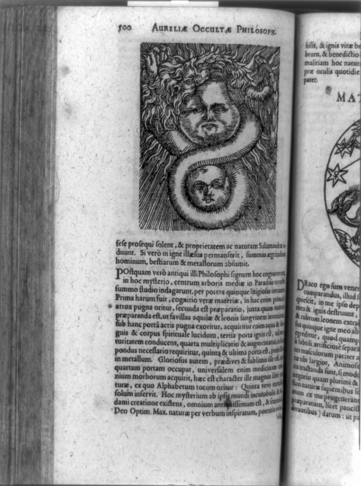
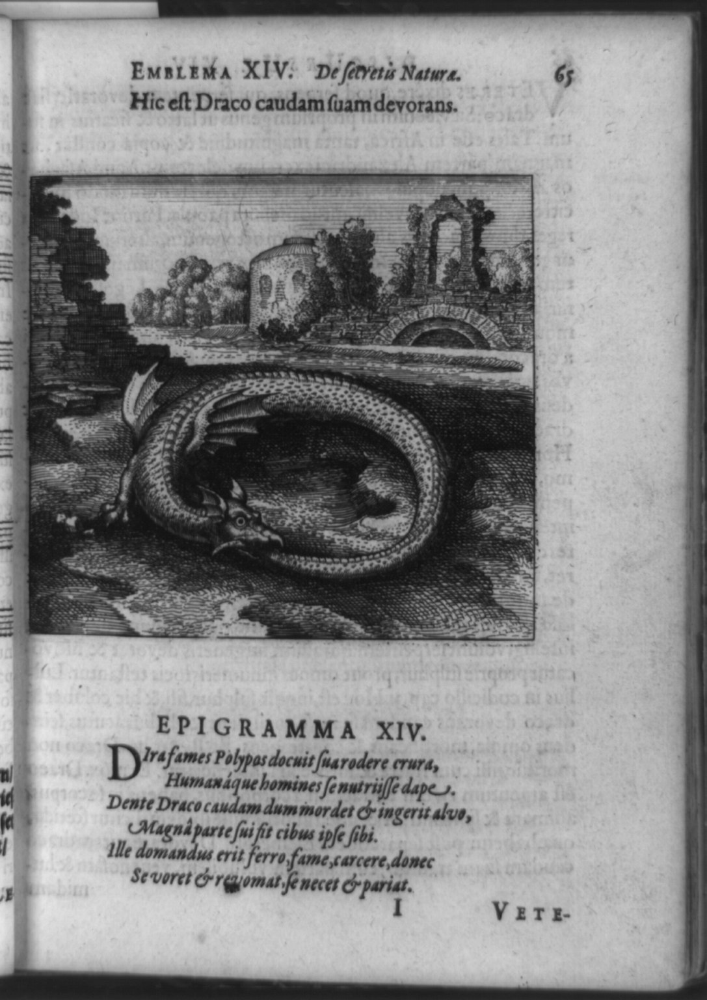
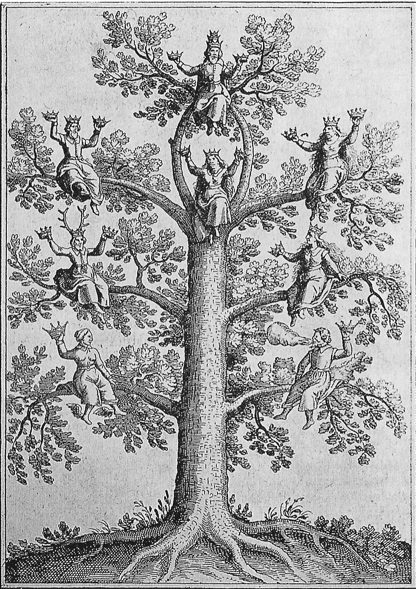
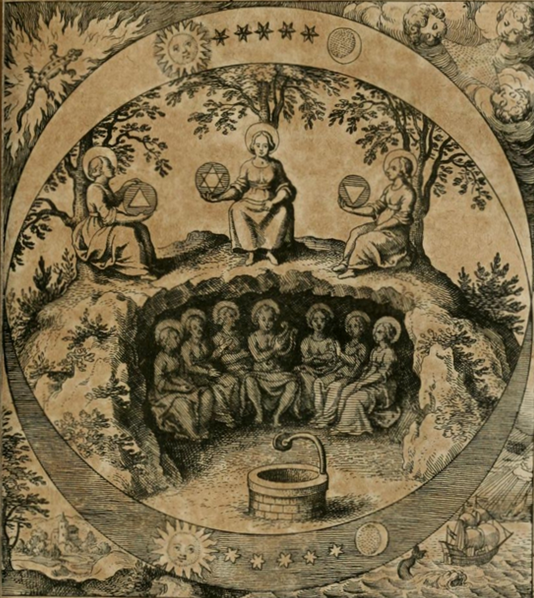
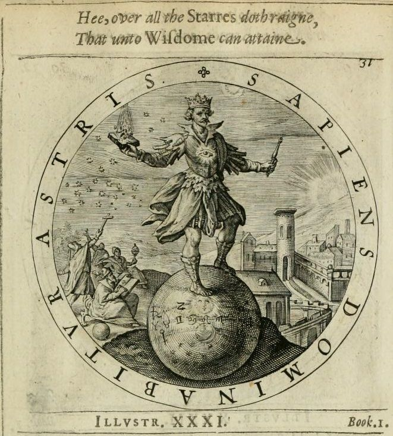

Project Chimera · The Transmutation Lab
UI Reference Wall
A brief, not a mood board — every reference says what to steal and what to leave. Bio-alchemy identity · solemn & scholarly · clarity over a battlefield.
A · Bio-alchemy identity & sigil motif own this — public domain
The engraved-emblem language that makes Chimera unmistakable. These are real 16th–17th-century alchemical plates (public domain) — free to use directly as motif, frame, and texture. Steal the grammar; leave the period clutter.






B · Clarity-with-warmth game UI steal the structure
Proof that a strong art identity and ruthless battlefield legibility coexist. Copyrighted — linked, not embedded.
C · Material & texture · D · Motion next pass
The engravings above double as etched-metal & inked-parchment texture. Still to source: specimen-jar bioluminescence (the “alive” beat), and the motion bucket.
Anti-references — the “typical AI design” zone to avoid
- Generic marketplace dark-fantasy UI as a look (ornate-for-its-own-sake, Souls-clone chrome).
- Neon sci-fi “FUI” / hologram-blue HUDs — wrong theme, and clashes with reserved team colors.
- Glassmorphism, soft gradients, default-rounded cards, indigo/violet accents — the safe default that started this.